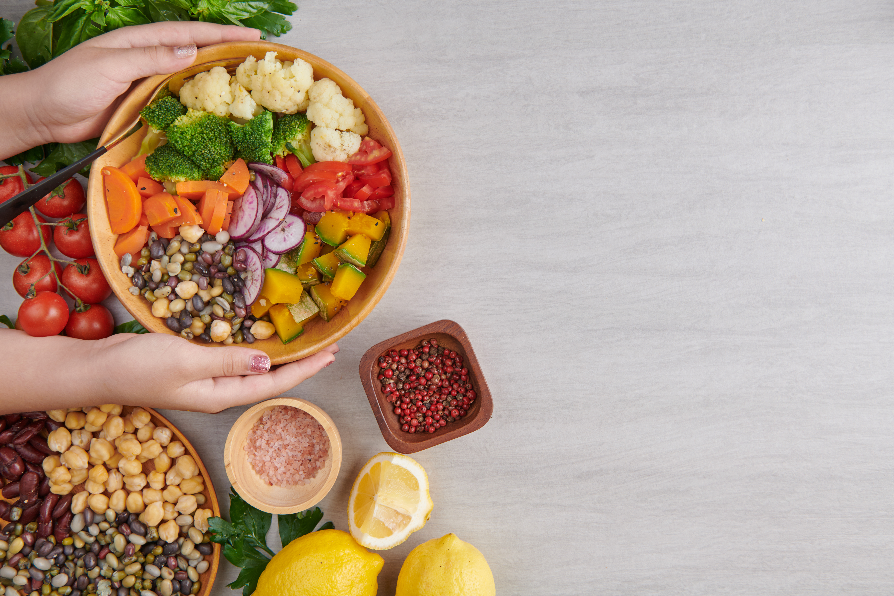

Serviços
Consultoria
Visita técnica, relatório de diagnóstico, criação de plano de ação.
Assessoria
Visita técnica, relatório de diagnóstico, criação de plano de ação e acompanhamento do andamento do plano.
Auditoria
- Boas Práticas de Fabricação
- Auditoria interna de ISO 9001:2015
- Auditoria de 5S
- Auditoria interna de IFS
- Auditoria em fornecedores para homologação
Documentação
- Check lists
- Manual de Boas Práticas de Fabricação
- Procedimento Operacional Padronizado (POPs)
- Instrução de Trabalho (IT)
- Ficha Técnica (FT)
- Especificação Técnica
- Plano de APPCC / HACCP
- Procedimentos de qualidade internos em geral
Treinamentos
Modalidades: In company e presencial.
Cliente Oculto
Visita ao estabelecimento para avaliação do atendimento e dos produtos.
Shelf Life
Implementação do estudo para determinação da vida de prateleira dos produtos.
A Qualidade é inegociável.
Pacotes
Remoto
Serviços 100% online com acompanhamento personalizado.
Ideal para reuniões, consultas, elaboração de documentos e treinamentos.
VT + Relatório de Visita
Trabalho pontual com levantamento de não conformidades, relatório e plano de ação.
VT + Relatório + Acompanhamento
Inclui o plano de ação, relatórios e visitas técnicas adicionais conforme necessidade.
Implantação de Documentação
Criação de documentos personalizados após visita técnica, com treinamento incluso.
Cada cliente é único. As soluções são adaptáveis e combináveis para atender suas necessidades com eficácia.

